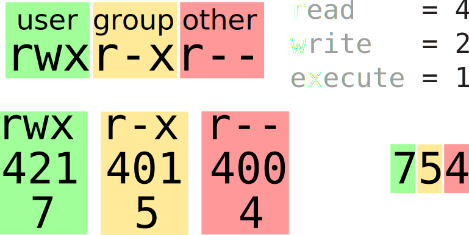

Bash (Bourne-again Shell)
Nadia GUEALIA
Cours système d'exploitation by Guillaume Chanel, Jean-Luc Falcone and University of Geneva is licensed under CC BY-NC-SA 4.0


Qu'est-ce qu'un Shell ?
Interface texte
Pourquoi utiliser une interface texte en ?Le Shell
- Interface textuelle, ligne de commande
- presque toutes les fonctionnalités d'Unix sont accessibles
- Petits outils simple que l'on peut composer
- Possibilité d'écrire des scripts
Terminal & Pseudo-Terminal
Autre interfaces en ligne de commande
Windows

Linux / Mac / UNIX
Préparation de l'environement de travail
- Ouvrez un pseudo-terminal (si il n'est pas déjà ouvert)

- Qu'observez-vous ?
Tapez la commande suivante:
$ git clone https://gitlab.unige.ch/outils-info/bash.gitManuel
Accèder au manuel (man)
- Un manuel très complet est présent sur les systèmes Unix
- Commande:
man [section] <sujet> - Pour sortir du manuel, appuyer sur la touche
q - Pour chercher le texte "montexte", taper
/montexte(valider par entrer)
Sections du manuel sur GNU/Linux
| 1 | Commandes générales |
| 2 | Appels systèmes |
| 3 | Librairie C |
| 4 | Fichiers spéciaux |
| 5 | Formats de fichiers et conventions |
| 6 | Jeux |
| 7 | Divers |
| 8 | Commandes d'administration et démons |
RTFM !
Se localiser et se déplacer
pwd, ls et cd
- Regarder dans quel dossier vous êtes
- Aller dans le dossier
/tmp - Vérifiez que vous êtes bien dans le dossier
/tmp - Lister le contenu du dossier
- Revenez dans votre dossier initial (i.e. dossier home)
- Allez dans le dossier bash (celui créer par la commande git)
- Lister le contenu du dossier /tmp depuis le dossier bash
Chemin d'accès
Les conventions suivantes (POSIX) s'appliquent:
- La racine est représentée par
/ - Les répertoires sont séparés par
/ - Tout chemin qui ne commence par
/est relatif au répertoire courant. - Le répertoire courant est symbolisé par
. - Le réperoire parent est symbolisé par
.. - Le répertoire home est symbolisé par
~
Chemin d'accès - exercices
- Quel est le résultat des commandes ci-dessous ?
$cd ~/././././bash$ls ~/./bash/../bash/../.Nommer un ensemble de fichiers
Les noms de fichiers suivent les règles suivantes:
- Maximum 255 caractères
- Tous les caractères sont autorisés, mais sont déconseillés:
- espaces
.*?/!
- Si le nom du fichier commence par un point, il est caché.
On peu référencer plusieurs fichiers en utilisant les symboles suivants:
| * | remplace zéro, un ou plusieurs caractères |
|---|---|
| ? | un seul caractère |
Fichiers cachés et selection - Exercices
- Avec le manuel trouvez l'option de
lsqui permet de lister les fichiers cachés - Utiliser la pour lister les fichiers cachés de votre dossier home
- Rendez vous dans le dossier bash/ressources
- Listez dans le dossier images toutes les images au format JPEG
- Lister toutes les images d'oiseaux
- Lister toutes les images d'oiseaux au format PNG
- Lister les images de chat portant un numéro entre 90 et 99 (inclus)
Les utilisateurs, les groupes et les droits
Informations sur les fichiers/dossiers
- Trouvez dans le manuel ce que fait la command
ls -lh - Observons ensemble le résultat...
Utilisateurs
- Chaque utilisateur se loge sur une machine Unix avec une identité (user)
- Un utilisateur est décrit par:
- Nom d'utilisateur
- Mot de passe
- Identifiant numérique (userid)
- Groupe par défaut
- Répertoire
home - Description
- Shell par défaut
Super-utilisateur (root)
- Il existe un super-utilisateur: root
- Son userid est le 0
- Il a le droit de tout faire.
Accès au mot de passe root: faille de sécurité majeure.
Groupes
Les utilisateurs peuvent faire partie d'un ou plusieurs groupes:
- Groupe par défaut
- Autres groupes
Ceci permet par exemple de:
- restreindre l'accès à un répertoire à un seul groupe
- donner accès à un périphérique à un seul groupe
Utilisateurs et groupes - exercices
- A l'aide de la commande
whoamiobtenez votre login - A l'aide de la commande
groupsobtenez vos groupes - Retrouvez ces information avec la commande
id
La commande cat permet d'afficher un ou plusieurs fichiers à l'écran (concatenation, voir manuel):
- utilisez cat sur le fichier /etc/passwd et retourvez vos informations utilisateur
- utilisez cat sur le fichier /etc/group et retrouvez les informations de vos groupes
Permissions

Permissions - effets
Fichier:
| Read | Lire le contenu du fichier |
|---|---|
| Write | Modifer le contenu d'un fichier Warning en cas de suppression |
| eXecute | Exécuter le fichier (exécutable binaire ou script) |
Répertoire:
| Read | Lister les noms des fichiers inclus (mais pas les métadonnées) |
|---|---|
| Write | Créer, renommer ou détruire les fichiers inclus |
| eXecute | "Ouvrir" le répertoire, voir les métadonnées, accèder au contenu des fichiers (mais pas aux noms), exécuter les fichiers exécutables. |
Permissions - octal et chmod

La commande chmod permet de changer les droits des fichiers:
$ chmod 754 monficher.cPermissions - exercices
- regarder le contenu du fichier bird00.jpg
- retirer les droits de lecture utilisateur du ficher images/bird00.jpg
- essayer de regarder le contenu du fichier bird00.jpg
- retirer les droits d'écriture utilisateur du ficher images/bird00.jpg
- Vérifier les changements de droit effectués
- Retirer les droits d'execution du dossier images
- Lister le contenu du dossier images avec
ls -l - Redonner les droits d'exécution au dossier
Créer et supprimer les fichiers/dossiers
Création et déplacement
| touch file | Crée un fichier vide si le fichier n'existe pas, sinon met à jour sa date de modification |
|---|---|
| mkdir folder | Crée le dossier spécifié |
| mv source [sources] dest | Déplace les sources vers la destination si la destination est un dossier, sinon renomme le fichier source en dest (possible changement de dossier) |
| cp source [sources] dest | Copie les sources vers la destination (la destination peut être un fichier ou un dossier) |
Création et déplacements - exercices
touch
mkdir
mv
cp
- créez un dossier backup
- copiez l'image images/bird01.jpg vers backup/mybird.jpg
- essayez de copier l'image images/bird00.jpg
- copiez toutes les images de chien vers backup
- créez un fichier image vide dans backup/myimage.png
- renommer ce fichier backup/myimage.jpg
- déplacez en une commande les images de chats portant les numéro [00-09] et [90-99] vers le dossier backup
Suppression
| rm fichier | Supprime le fichier indiqué |
|---|---|
| rmdir dossier | Supprime le dossier indiqué |
Suppression - exercices
- tentez de supprimer le dossier backup, pourquoi n'est-ce pas possible?
- supprimez le fichier backup/mybird.jpg
- supprimez tout le contenu du dossier backup en une commande
- supprimez le dossier backup
- essayez de supprimer le fichier images/bird00.jpg. Refusez de supprimer le fichier. Que c'est-il passé, pourquoi ?
- ce fichier est donc supprimable, comment faire pour qu'il ne le soit plus ? Testez la solution, puis remmettez les droits à ceux d'origine
- copiez le dossier images vers images-backup, que ce passe-t-il ? Que veux dire l'option proposée ?
- effectuez la copie en utilisant l'option adéquate
- en regardant le manuel de la commande
rm, supprimez le dossier images-backup et son contenu en une commande
Le Cauchemar
$ rm -rf ~/*.txt
$ rm -rf ~/* .txt
Editer un fichier sur une interface texte
Plusieurs éditeur shell sont disponibles, on peut mentionner:
| nano | Editeur léger, le plus facile a appréhender, les raccoucis clavier sont indiqués en bas |
|---|---|
| vi | Editeur historique, forte courbe d'apprentissage |
| vim | Nouvelle version de vi avec de nombreux plugins disponibles |
| emacs | Editeur historique, forte courbe d'apprentissage, plus qu'un éditeur, il fait même le café |
Editer un fichier
- Créer un nouveaux fichier contenant la liste de vos courses en utilisant un éditeur
- Vérifier le contenu du fichier en utilisant une commande déjà vue (autre que l'éditeur)
Redirection de flux et pipes
Flux de sortie
Le flux de sortie d'un programme est dirigée par défaut sur le terminal
La commande echo affiche les paramètres sur la sortie standard
$ echo ce cours est vraiment génial
ce cours est vraiment génial
$ echo "ce cours est vraiment génial"
ce cours est vraiment génialCe flux peut être redirigé vers un fichier avec '>' :
$ echo ce cours est vraiment génial > /tmp/qualite_du_cours.txtFlux de sortie - exercices
- stockez la liste des fichiers du dossier images, ainsi que leurs attributs, dans un fichier nommé result
- copiez un fichier vers le fichier result sans utiliser la commande
cp - regarder le contenu de result
- stockez la liste des fichiers du dossier images, ainsi que leurs attributs, dans un fichier nommé result
- En utilisant '>>' au lieu de '>' copiez un fichier vers le fichier result sans utiliser la commande
cp - regarder le contenu de result, que concluez vous ?
Flux d'entrée
Le flux d'entrée d'un programme est par défaut associé au clavier du terminal
La plus part des commandes nécéssitant une entrée en paramètre (par exemple un nom de fichier) utilisent l'entrée standard si le parmètre n'est pas donné
$ cat # va attendre et répeter les entrées utilisateur
$ cat > livre.txt # va concatener tous ce qui est tapé dans livre.txt -> UN NOUVEL EDITEUR :-) !Un fichier peut-être redirigé vers ce flux d'entrée en utilisant '<' :
$ cat < livre.txt # l'entrée standard est le fichier livre
$ cat livre.txt # le programme lit depuis le fichier livre, pas depuis l'entrée standard
$ # LE RESULTAT EST LE MEMECtrl+D permet d'intérrompre le flux d'entrée
Flux d'erreur
Les message d'erreur des programme ne sont pas redirigées vers le flux de sortie mais vers un flux d'erreur
Par défaut le flux d'erreur est redirigé vers le terminal
Ce flux peut être redirigé vers un fichier avec '2>' :
$ ls non_existant_folder > /tmp/error.txt # produit une erreur sur le terminal et un fichier vide
$ ls non_existant_folder 2> /tmp/error.txt # produit un fichier contenant l'erreureFlux d'erreur - exercices
- Utilisez la commande
ls -R /tmppour lister récursivement le contenu de /tmp - Utilisez la même commande mais redirigez la sortie standard et l'erreur standard vers deux fichiers différents
- Observez ces fichiers
Flux Standard dans les langages de programmation
| C | C++ | Java | Python | Ruby | |
|---|---|---|---|---|---|
| Entrée | stdin | std::cin | System.in | sys.stdin | $stdin |
| Sortie | stdput | std::cout | System.out | sys.stdout | $stdout |
| Erreur | stderr | std::cerr | System.err | sys.stderr | $stderr |
Exemple:
System.out.println( "Hello world!"); $ java HelloWorld > hello.txtPipes ou tubes
Les pipes permettent de rediriger la sortie standard d'un programme vers l'entrée standard d'un autre
On utilise le symbole '|' entre deux commandes pour les utiliser:
$ less file # affiche le contenu du fichier file avec scrolling
$ ls -R /tmp | less # affiche la sortie de ls AVEC scrollingCombinés à la phylosophie UNIX, les pipes sont au coeur de la puissante des interfaces en ligne de commande
grep
| grep fichier pattern | cherche et affiche les lignes du fichier qui contienne un pattern (e.g. un mot) |
|---|---|
| grep pattern | cherche le pattern dans l'entrée standard et affiche les lignes le contenant |
Pipes et tubes - exercices
Quelques commandes utiles pour ces exercices (voir le manuel):
sort, uniq, grep, head, du
Utilisez la commande ls -l pour lister les fichiers de chats du dossier images mais sans ajouter d'arguments à ls
Le dossier mails contients des listes d'adresses. A partir de ces fichiers obtenez une seule liste des membres de HEPIA, triée par ordre alphabétique, sans doublons
Lister les 2 plus gros fichiers contenus dans le dossier mails
Système de fichiers
Système de fichiers (1)
- Manière d'organiser les données sur le disque:
- Noms
- Répertoires
- Permissions
- Metadonnées
- Maintien de l'intégrité
- …
Systèmes de fichiers (2)
Il existe plusieurs types de systèmes de fichiers. Par exemple:
| VFAT | Ancien système de fichiers de Windows, très utilisé sur les clé-usb, lecteurs MP3, etc. |
|---|---|
| NTFS | Système de fichiers récent sur Windows. |
| ext4 | Système de fichiers par défaut sous beaucoup de distributions GNU/Linux |
| ISO9660 | Système de fichiers des CD-ROMs |
| UDF | Système de fichiers des DVDs |
| HFS+ | Système de fichiers sur MacOSX |
| NFS | Système de fichiers réseau sous Unix |
| IPFS | Interplanetary file system - système de fichiers distribué et décentralisé. |
Arborescence (1)
- Tous les systèmes de fichiers sont "montés" sur une seule et même arborescence.
- Seul
rootpeut monter/démonter des systèmes de fichiers (par défaut) - La plupart des installations GNU/Linux actuelles, montent automatiquement les disques externes (CD, DVD, usb)
Arborescence (2)
Arborescence (3)
Arborescence unix standard
/bin/ | Principaux exécutables |
/boot/ | Fichiers de démarrage |
/dev/ | Périphériques |
/etc | Configuration système |
/home/ | Données utilisateurs |
/lib/ | Librairies système |
/media/ | Montage des périphériques de stockage |
/mnt/ | Point de montage manuel |
/proc/ | Processus |
/root/ | Répertoire perso du superutilisateur |
/sbin/ | Exécutables pour la maintenance |
/sys/ | Informations système |
/usr/ | Applications et librairies utilisateurs |
/var/ | Données variables (logs, spool, mail…) |
Everything is a file
- Plusieurs concepts sont représentés par des fichiers synthétiques.
- Par exemple:
- Les périphériques sont visibles dans
/dev/ - Les processus (et certaines info système) sont visibles dans
/proc/ - Informations sur les périphériques dans
/sys/
- Les périphériques sont visibles dans
Exemples d'utilisation de /dev/
Exercices - Système de fichiers
- Grâce à la commande
mount, trouvez où sont montés les systèmes de fichier de type ext4, fat et tmpfs ? - sachant qu'il existe deux types de périphériques, bloc (resp. caractère) indiqué dans le mode du fichier par le symbole b (resp. c); listez les périphériques de type bloc.
- grâce au device
zero, remplissez un fichier de 1MB de zeros (attention la commande peu donner lieu à de GROS fichier si mal utilisée). - grâce au device
null, lister recursivement le contenu de /tmp sans que le terminal n'affiche de sortie d'erreur.
Processus
Qu'est-ce qu'un processus ?
- Instance d'un programme en cours d'execution
- Possède:
- Son code en langage machine
- Des Segments de mémoire (e.g. code, données, pile, etc.)
- Des descripteurs de fichiers (e.g. les sortie et entrées standard)
- Un propriétaire et un ensemble de permissions
- Un état à un moment donné (e.g. le pointeur d'instruction)
- Un coeur de processeur ne peut exécuter qu'un processus à la fois
- Le système d'exploitation peut alterner l'execution de plusieurs processus (multi-tasking)
Processus UNIX
La commande ps permet de lister les processus
Sous unix, tous les processus ont:
- un identifiant numérique (PID)
- un processus parent (sauf le processus 0)
PS - exercices
- Tapez la commande
ps. Qu'est ce que les processus affichés ont en commun ? - Taper la commande
ps -ef(voir man). Trouvez un processus qui est l'enfant d'un autre. - Vérifiez avec la commande
pstreeque c'est bien le cas. Quel est le PID du processus initial (le plus ancien parent de tous les processus)? - Trouvez un moyen de lister tous les processus vous appartenant.
Utilisation du CPU (top)
La commande top permet de voir quels processus occupent le(s) CPU(s).
Signaux
- Les signaux permettent une communication limitée entre les processus.
- La commande
kill -lpermet d'afficher les différent signaux - Quelques signaux utiles:
| Nom | Action | Numero |
| SIGINT | Interrompt le processus | 2 |
| SIGKILL | Tue le processus immédiatement | 9 |
| SIGTERM | Demande la terminaison (propre) | 15 |
| SIGTSTP | Suspension | 20 |
| SIGCONT | Active un processus suspendu | 18 |
| SIGUSR1 | Signal utilisateur 1 | 10 |
| SIGUSR2 | Signal utilisateur 2 | 12 |
Envoyer un signal (kill)
kill -signal [pids]...kill permet d'envoyer un signal à un processus
$ kill -SIGKILL 2111 2120
$ kill -15 2111Gestion des signaux par les processus
- Tous les processus peuvent gérer (intercepter) un signal.
- Par exemple:
- Sauver l'état avant de quitter lorsque
SIGTERMest reçu - Redémarer le processus lorsque
SIGINTest reçu
- Sauver l'état avant de quitter lorsque
- Le signal
SIGKILLne peut être intercepté
Signaux depuis le shell
Les raccourcis claviers suivant permettent de lancer un signal à un processus du shell:
| ctrl+C | Envoie SIGINT |
|---|---|
| ctrl+Z | Envoie SIGTSTP |
Attention ctl+D n'est pas un signal mais envoie "End-Of-File" (EOF) sur l'entrée standard
Exercice sur les signaux
- Lancez l'éditeur de texte grahique
geditdepuis le terminal - Intérrompez l'éditeur en lui envoyant SIGINT de deux manières différentes
- Lancer un éditeur de texte dans le shell (i.e. non grahique) et taper du text sans sauvegarder
- Depuis un autre terminal, terminez le programme avec lui envoyant le signal SIGTERM
- Recommencez mais cette fois interrompez le programme avec lui envoyant le signal SIGINT
- Finalement terminez le programme en lui envoyant le signal SIGKILL
- Quels sont les différences de comportement ?
Jobs
- Par défaut, tout processus lancé depuis le shell tourne à l'avant-plan (foreground)
- Un processus en avant-plan bloque le shell tant qu'il n'est pas fini.
- On peu aussi lancer un processus en arrière-plan (background):
- Ajouter un
&après la commande:$ gedit & - Interrompre un processus:
- Utilisez
ctrl-Zpour interrompre le processus - Utilisez la commande
bgpour relancer un processus interrompu en arrière-plan - On peut aussi utiliser
fgpour remettre le dernier processus interrompu en avant-plan
- Utilisez
- Ajouter un
Exercice sur les jobs
- Lancez l'éditeur de texte grahique
geditdepuis le terminal, cette fois en arrière plan - Mettre le processus en pause, tester sa réactivité, puis le relancer en appellant
kill
- Editez un fichier en utilisant
vim - Interrompre le processus avec ctrl-Z
- Remettre le processus en avant plan
Connexions a distance: SSH (Secure SHell)
Utilité
- travail à distance comme si l'on étais sur un terminal de la machine
- accéder à une machine qui ne possède pas de terminal
- transférer des fichiers de manière sécurisée
- connexion sécurisée pour des clients X distants (pour sur-simplifier: interface graphique distante)
Comment ca marche ?
- se connecter avec la commande suivante:
- vérifier que le fingerprint du serveur correspond bien à celui attendu
- entrer son mot de passe
- on peut terminer la connexion en mettant fin au shell associé (
exitou Ctrl+D)
$ ssh login@mon.server.comSSH - Exercices
- connectez-vous au serveur
10.136.26.133, dont le fingerprint est:
SHA256:dMjJfl/CweskwJK6g+L4vtCh0CgYsYYR7R8aoHISA2Uvotre_nom_prenom en utilisant un editeur de texteSCP
La commande SCP permet de copier des fichier d'un serveur vers la machine locale et vice-versa
$ scp login@mon.server.com:/path/to/my/file /path/to/destination$ scp /path/to/my/file login@mon.server.com:/path/to/destinationLes formats de chemin habituels sont disponibles (*, ?, ~, etc.)
SCP - Exercices
- copier le fichier du dossier
votre_nom_prenomlocalement - modifier ce fichier localement
- copier le nouveau fichier dans le dossier distant
votre_nom_prenom
Authentification par clef publique
Principe
Vous avez a disposition une clef publique et une clef privée:
- la clef privée VOUS identifie sur UNE MACHINE (une clef par utilisateur et par machine)
- la clef publique est associée à la clef privée, et elle sera disbribuée à toute entité avec laquelle vous voulez communiquer
- la clef publique est utilisée pour chiffrer un message qui vous est envoyé, seul la clef privée permet de le décoder
Il n'est donc pas grave de distribuer sa clef publique, en revanche la clef privée est personelle et ne doit jamais quitter la machine
Authentification par clef publique
Protocole
- client: bonjour je me présente, voici ma clef publique
- server: ok elle fait bien partie de la liste des clefs que je connais (il faudra donc fournir sa clef au serveur avant authentification)
- server: voici un message chiffré par votre clef publique, serez-vous capable de le déchiffrer ?
- client: oui je peu, j'ai la clef privée et voici le message déchiffré
- server: ok je confime que vous avez la bonne clef privée car le message est bien déchiffré, vous êtes authentifié
Authentification par clef publique
Utilisée de plus en plus fréquement par des services en ligne (e.g. github, gitlab, etc.)
Avantages
- facilité de connexion et automatisation (on peu eventuellement se passer d'un mot de passe)
- plus sécurisé qu'un mot de passe car aucune information secrète n'est transférée
Inconvenients
- il est parfois difficile de gérer un grands nombre de clefs publiques/privées
- demande quelques connaissances techniques
Authentification par clef publique
En pratique
Créer une paire de clef publique / privée (de préférence avec passphrase)
$ ssh-keygenPlusieurs questions vous sont posées.
Copier la clef publique sur le serveur
$ ssh-copy-id login@mon.server.comSe connecter au serveur
$ ssh login@mon.server.com